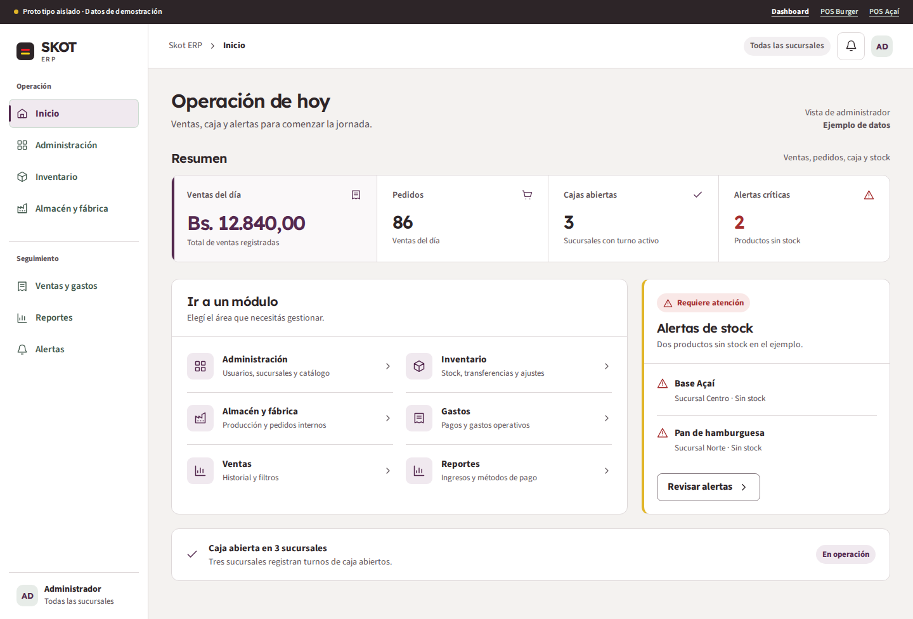
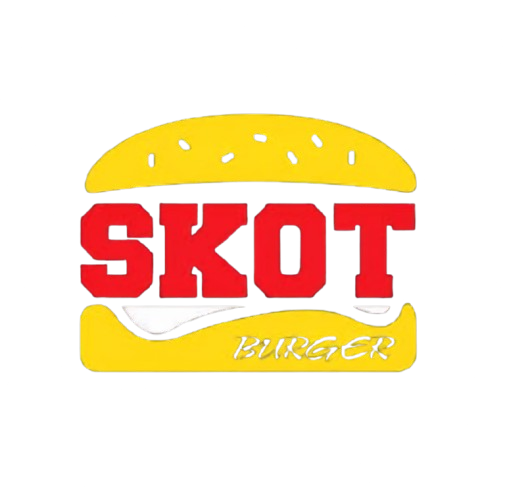
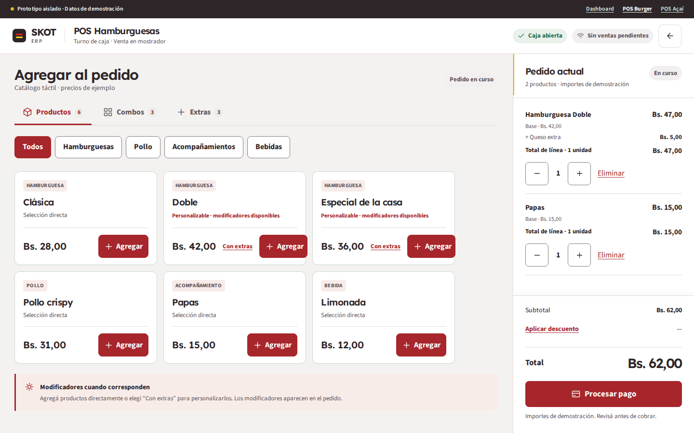
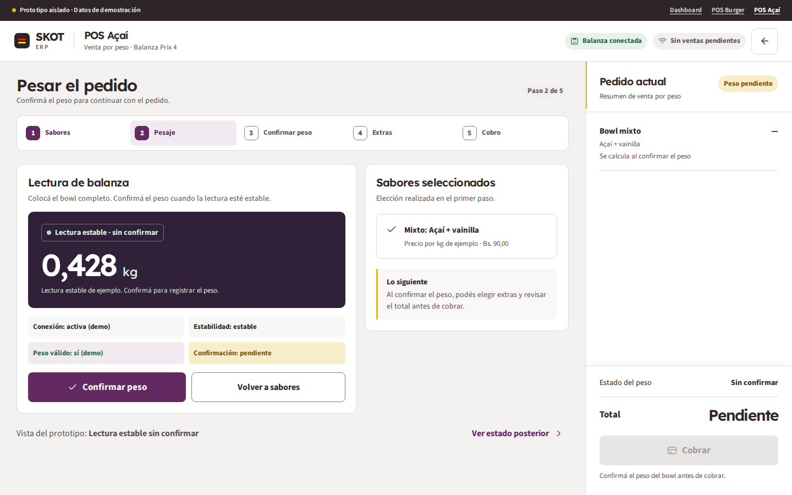

ERP administrativo
Operación de hoy
Resumen de ventas, pedidos, caja y alertas; navegación por tareas.
Abrir dashboardVer captura móvilMisma composición aprobada, con acentos por unidad de negocio. Skot Burger utiliza rojo y amarillo del logo; Açaí conserva su morado; el ERP usa un tono ciruela sobrio. Todos los datos siguen siendo de demostración.

Referencia: letrero y logo Skot BurgerEl rojo y el amarillo vivos se reservan para la marca. Los controles usan una versión más oscura del rojo para conservar contraste.

Resumen de ventas, pedidos, caja y alertas; navegación por tareas.
Abrir dashboardVer captura móvil
Catálogo, combos, extras, modificadores y pedido con total visible.
Abrir POS BurgerVer captura móvil
Pesaje, confirmación, extras y cobro con estados visibles.
Abrir POS AçaíVer captura móvilLos enlaces y controles de venta dentro de las maquetas ilustran el diseño. No acceden a APIs, sesiones ni datos reales. Consultá el plan de Fase 3 y compará con la paleta aprobada anterior. Esta variante no modifica el ERP funcional.